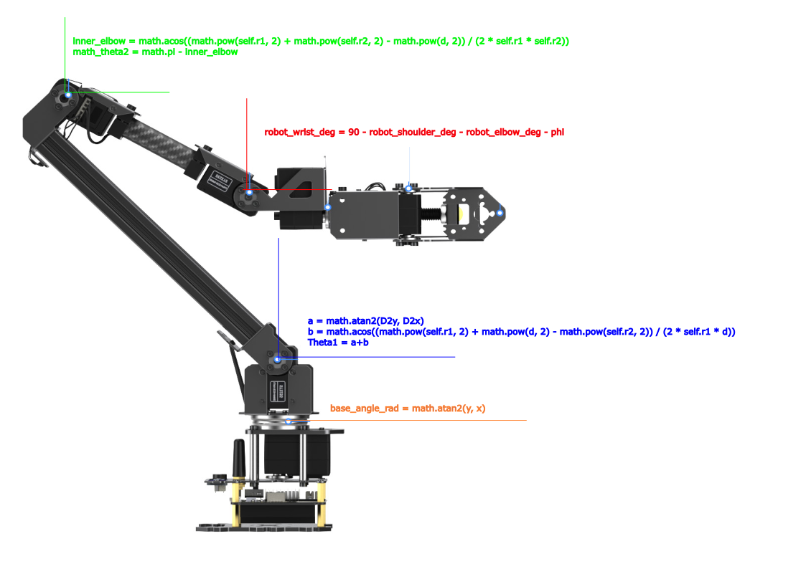

Project Overview
To improve the control, accuracy, and usability of the RO-ARM m2 and m3 series robotic arms, I developed and currently maintain an open-source Python library. This project abstracts complex mathematical models and low-level serial communication into an intuitive Software Development Kit (SDK) designed for the robotics community, allowing for seamless integration into larger autonomous systems.

Hardware & Kinematics Architecture
The core challenge of controlling a multi-axis robotic arm is translating desired 3D coordinates into specific rotational angles for each servo motor. I engineered a robust mathematical model to solve this.
- Inverse Kinematics (IK) Solver: Developed a custom mathematical solver that calculates the precise joint angles ($\theta_1, \theta_2, \theta_3$, etc.) required to place the end-effector at specific Cartesian coordinates ($X, Y, Z$) in 3D space.
- Constraint Management: Implemented physical hardware limits within the math to prevent self-collision and ensure the arm operates safely within its mechanical boundaries.
- Hardware Support: Designed the logic to support the specific geometries of the RoArm m2, m3, and m3 pro models, adjusting link lengths and joint offsets dynamically.

Software & Python SDK Implementation
Beyond the math, the system needed to be highly responsive and easy for other developers to deploy in their own projects.
- API Abstraction: Built a Python wrapper that translates the high-level IK solutions into low-level JSON/serial commands that the RoArm microcontroller natively understands.
- Real-Time Execution: Optimized the Python code to run efficiently, ensuring low-latency communication between the host computer (e.g., NVIDIA Jetson or Raspberry Pi) and the robotic arm for real-time tracking tasks.
- Open Source Community: Fully documented the codebase and published it to GitHub, providing installation instructions, dependencies, and example scripts for immediate use by hobbyists and researchers.